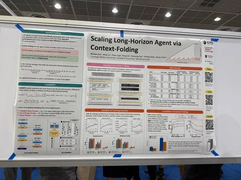
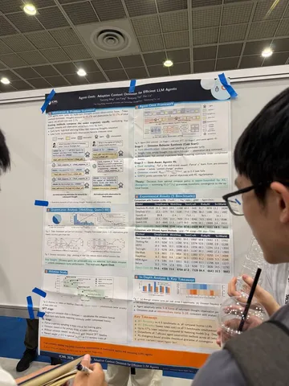
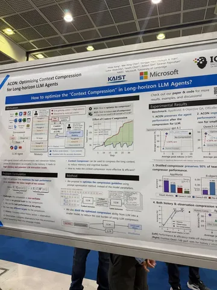
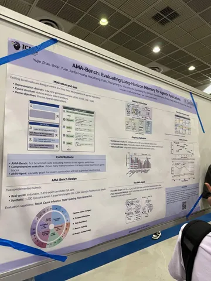

Об агентах и агентских системах в этом году говорили примерно все — тема стала одним из фокусов конференции. Главные тренды и новости собрала наша коллега Кристина Гуртова.
Было много работ о бенчмарках и диагностике агентов — пожалуй, самый крупный кластер. Пользовались популярностью мультиагентные системы и их обучение, agentic RL и tool use. Отдельное активное направление — safety. Общий тренд: рассматривать агента как инженерную систему, где каждый компонент (среда, обучение, оценка или память) становится отдельным объектом оптимизации.
А я углублюсь в актуальную проблему агентов: как не захлебнуться в собственном контексте. Сжимать его, сворачивать или выносить во вне?
Путь 1. Агент сам решает, что исключить из истории
Раньше агент линейно накапливал всю историю в один растущий контекст. Теперь — он ей управляет.
В Context-Folding (CMU, Stanford, ByteDance) агент разветвляет подзадачи с помощью двух тулколов: branch() создаёт подзадачу, return() возвращает итог этой подзадачи. Промежуточные шаги не попадают в основной контекст.
В Agent-Omit (HKUST) авторы посчитали, что размышления съедают около 45% токенов, наблюдения — 52%, а действия — всего 3%, поэтому их статья сфокусирована на сокращении ризонинга. Агент выборочно опускает свои мысли и наблюдения.
Conversational Inertia (ZJU, Ant) описывает отдельный побочный эффект длинной истории — «инерцию». Агент начинает имитировать собственные прошлые ответы как few-shot и перестаёт исследовать. Проблема лечится периодической очисткой истории.
Путь 2. Сжатие контекста — оптимизируемый навык, а не фиксированное правило
ACON (KAIST, Microsoft) оптимизирует не веса, а промпт для сжатия. Авторы собирают трейсы с полной и сжатой историей, сравнивают их с помощью LLM-критика и дополняют этим промпт. Затем дистиллирует такой навык компрессии в маленькую модель и используют его.
Путь 3. Внешняя память и переиспользование опыта
Ещё один вариант — не выбрасывать, а сохранять надолго.
EAM держит память как граф знаний, где узлы — это состояния системы, а рёбра — действия для перехода между ними.
Darwinian Memory — training-free память, где записи конкурируют за «выживание». Полезные переиспользуются, устаревшие и ненадёжные удаляются.
SE-GA хранит три вида памяти: эпизодическую, семантическую и экспериенциальную. Агент достаёт малую часть из каждой из них, добавляя к себе в контекст.
UMEM (Xiamen, Alibaba) обучают внешнюю модель работать с банком памяти. Для этого они замораживают модель-агента и обучают отдельный оптимизатор, что записать, обновить и удалить.
Отдельно — как это честно мерить. AMA-Bench проверяет память в реальных агентных траекториях, а не на сырых диалогах, и дополнительно показывает, что многие memory-системы пока проигрывают простому long-context.
#YaICML2026
Душный NLP



